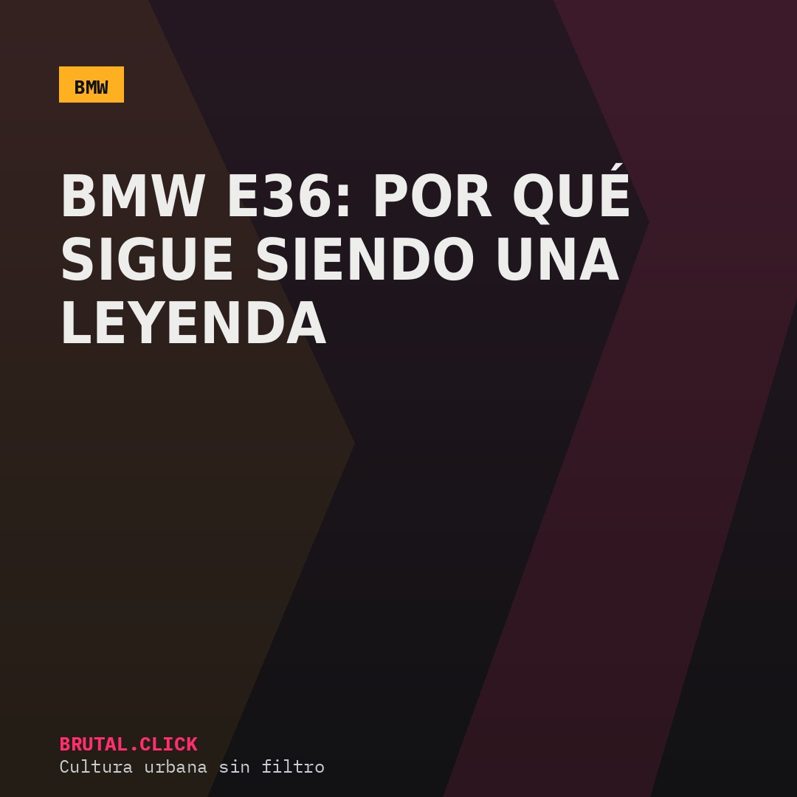
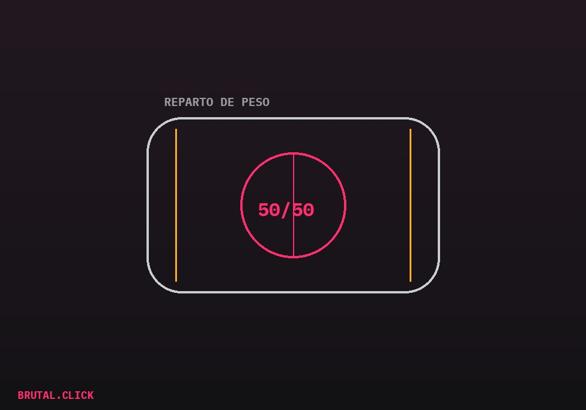
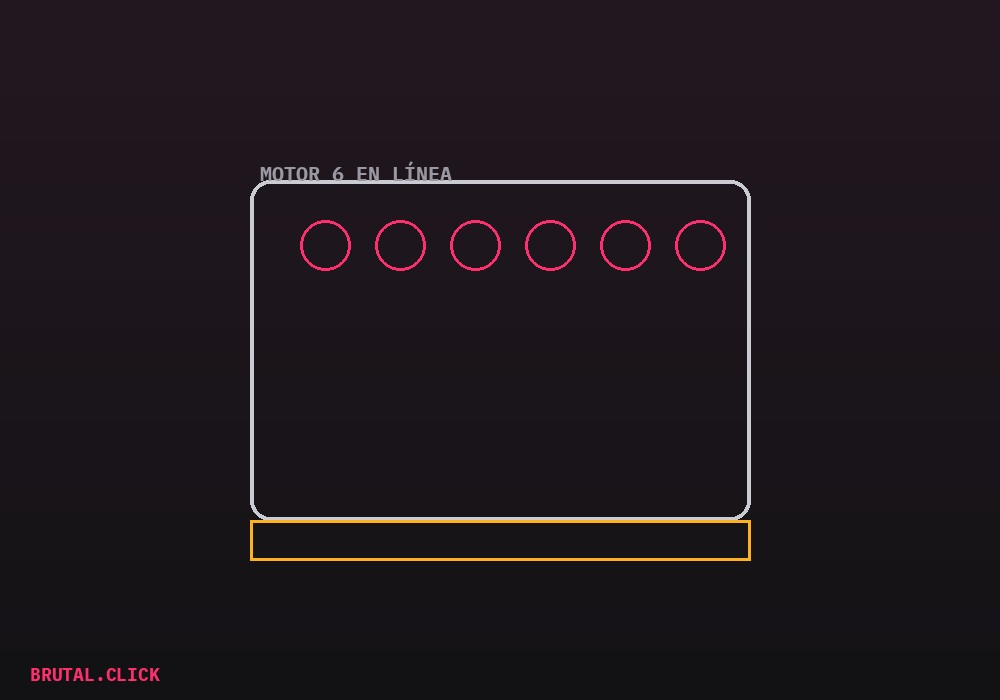

Este artículo incluye enlaces de afiliación a productos relacionados (modelos a escala, piezas, manuales). No hay comisión posible por la venta de vehículos nuevos — eso no existe como programa de afiliados. Si compras a través de estos enlaces, podemos recibir una pequeña comisión sin coste extra para ti.

Hay coches que se venden por potencia y coches que se venden por carácter. El BMW Serie 3 E36, fabricado entre 1990 y 2000, pertenece claramente al segundo grupo — y precisamente por eso, treinta años después de su lanzamiento, sigue siendo el coche que casi cualquier escuela de drift de Europa tiene aparcado en su flota.
Por qué un coche de los 90 sigue siendo relevante
No es nostalgia. El E36 resuelve, con una sencillez mecánica que los coches modernos ya no tienen, el problema central del drift y del motorsport de aficionado: un chasis predecible. Su reparto de peso, cercano al 50/50 entre eje delantero y trasero, significa que el coche reacciona de forma consistente cuando se le lleva al límite — ni sobrevira de forma brusca, ni entrega el control sin avisar.

A eso se suma la tracción trasera (RWD), que en un coche de calle moderno es casi una rareza reservada a deportivos de gama alta, pero que en el E36 venía de serie incluso en versiones modestas. Es esa combinación — chasis equilibrado más tracción trasera accesible — la que ha hecho que varias generaciones de pilotos de drift hayan aprendido el oficio precisamente en este coche.
El motor: seis en línea, la firma de BMW
El E36 se ofreció con varias motorizaciones, pero las que de verdad marcaron su reputación fueron los seis cilindros en línea (la serie M50/M52), conocidos por su suavidad de funcionamiento y por ser especialmente agradecidos con las modificaciones económicas — admisión, escape, gestión electrónica — sin necesitar tocar el bloque motor para notar una diferencia real.

Esa facilidad para modificar sin arriesgar la fiabilidad del motor es otro motivo por el que el E36 sigue vivo en el mercado de segunda mano a precios todavía razonables, mientras generaciones posteriores del Serie 3 ya cotizan bastante más caro por el mismo tipo de experiencia.
Lo que hay que saber antes de comprar uno
El principal enemigo del E36 hoy no es la mecánica, es la corrosión — muchas unidades llevan treinta años expuestas a sal y humedad, y los bajos y pasos de rueda son el punto a revisar antes que cualquier otra cosa. Un E36 mecánicamente perfecto pero oxidado por dentro es, a la larga, un coche más caro que uno con más kilómetros pero bien conservado.
Modelo a escala BMW E36 1:18
Para la estantería, no para el garajeManual de taller BMW Serie 3 E36
Referencia para mantenimiento y restauraciónEnlaces pendientes de activar el programa de afiliados.